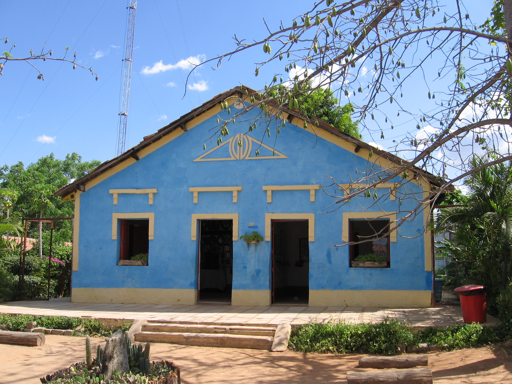

Informações técnicas sobre relevo, população, IDH etc.
| INFORMAÇÕES | |
|---|---|
| Municípios limítrofes | Altaneira, Farias Brito, Crato, Santana do Cariri |
| Fundação | 14 de abril de 1957 (64 anos) |
| Área total | 284,40 km² |
| Clima | Tropical quente semiárido brando |
| IDH | 0,625 — médio |
| PIB | R$ 74 981 mil |
| INFORMAÇÕES TERRITORIAIS | |
|---|---|
| Número de habitantes | 15 565 habitantes |
| Superfície de Nova Olinda |
28 440 hectares
284,40 km² (109,81 sq mi) |
| Densidade populacional | 54,7 ha./km² |
| Altitude de Nova Olinda | 445 metros de altitude |
| Coordenadas geográficas decimais |
Latitude:
-7.58333
Longitude: -39.0833 |
| Coordenadas geográficas sexagesimais | Latitude: 7° 34' 60'' Sul , Longitude: 39° 4' 60'' Oeste |
| INFORMAÇÕES DO MUNICÍPIO | |
|---|---|
| Endereço da Prefeitura Municipal de Nova Olinda |
Nova Olinda
Prefeitura de Nova Olinda
Av. Perimetral Sul, s/n NOVA OLINDA - CE, 63165-000 Brasil Work +55 88 3546-1148 Fax +55 88 3546-1322 |
| Telefone da prefeitura |
(88) 3546-1148
Internacional: +55 88 3546-1148 |
| Fax |
(88) 3546-1322
Internacional: +55 88 3546-1322 |
| Endereço electrónico da prefeitura |
pmnogabinete@bol.com.br
|
| Site oficial do município | novaolinda.ce.gov.br |
| INFORMAÇÕES DO ADMINISTRATIVAS | ||
|---|---|---|
| Prefeito de Nova Olinda | ÍTALO BRITO ALENCAR ALVES | |
| Partido politico | PP | |
| INFORMAÇÕES DE TRANSPORTE | |
|---|---|
| Transporte urbano disponível | Transporte urbano público não disponível |
| Aeroporto |
Aeroporto Regional do Cariri
45.5 km
Aeroporto de Paulo Afonso
222.1 km
Aeroporto de Petrolina
256.6 km
|
| INFORMAÇÕES DE DISTÂNCIA A OUTRAS CIDADES | ||
|---|---|---|
| São Paulo : 1952 km | Rio de Janeiro : 1762 km | Brasília : 1327 km |
| Salvador : 603 km | Belo Horizonte : 1460 km | Manaus : 2373 km |
| Curitiba : 2262 km | Recife : 466 km | Goiânia : 1499 km |
| Belém : 1248 km | Porto Alegre : 2802 km | Guarulhos : 1930 km |
| Campinas : 1907 km | São Luís : 807 km | Fortaleza : 434 km mais perto |
| Distância calculada em linha reta! | ||
Conheça mais sobre a história de Nova Olinda.
Nova Olinda é um município do estado do Ceará, Brasil. Localiza-se na microrregião do Cariri, mesorregião do Sul Cearense, Região Metropolitana do Cariri. O município tem cerca de 13 mil habitantes e 291 km². Foi criado em 1957.
Primitivamente chamou-se Tapera, porém em razão do seu aspecto geográfico, um missionário pernambucano mudou o topônimo para Nova Olinda. Pertencente ao município de Santana do Cariri o então o povoado passou à categoria de distrito, por força do decreto nº 1.256, de 4 de dezembro de 1933. Nova Olinda foi elevada a município, pela lei nº 3.555, de 14 de março de 1957 e instalado no dia 26 de abril do mesmo ano.
Nova Olinda reserva aos visitantes boas opções: arqueologia, folclore, artesanato e a natureza. Preserva ainda a Igreja do Padroeiro São Sebastião, exemplo da bela arquitetura de suas construções.
Saiba mais sobre os melhores lugares e o que fazer em Nova Olinda.
Paróquia de São Sebastião: A Paróquia de São Sebastião, Nova Olinda-CE foi criada em 20 de Janeiro de 1980, por Dom Vicente de Paulo Araújo, terceiro bispo da Diocese de Crato, sendo desmembrada do território da Paróquia Senhora Sant’Ana (Santana do Cariri-CE).
Fundação casa grande: A fundação casa grande -memorial do homem kariri é uma organização não governamental brasileira, sem fins lucrativos, que tem como objetivo proporcionar a crianças e jovens e seus familiares a formação social e cultural através da vivência em gestão institucional dentro dos seus cinco programas: educação infantil; profissionalização de jovens; empreendedorismo social; geração de renda familiar; sustentabilidade institucional.
Veja como chegar nos melhores pontos de Nova Olinda